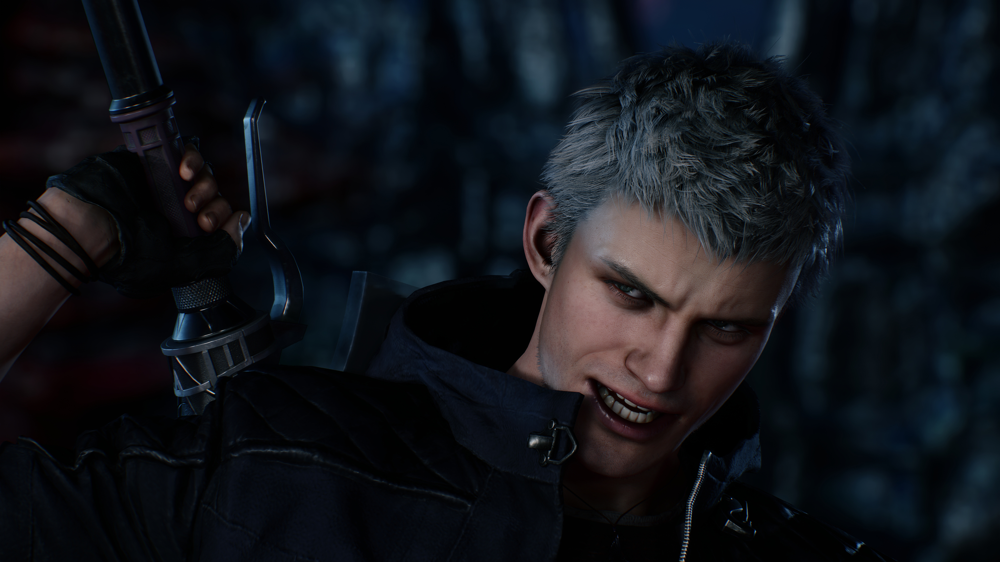

История начинается через пять лет после концовки DMC 4 .Основную роль в сюжете играет не Данте, а Неро – он создал передвижное агентство по охоте на демонов и вместе с талантливым механиком-девушкой Нико разъезжает по свету, шинкуя демонов. Идиллия заканчивается вначале DMC 5 – во время схватки с таинственным Уризеном, злодеем, Неро проигрывает и лишается руки. Нико устанавливает кибернетический протез, восстанавливая боеспособность Неро. Тут же возвращаются все знакомые лица — Данте, Леди и Триш . Присутствие Ви добавляет интриги.

Devil May Cry 5
Devil May Cry 5 — компьютерная игра в жанре слэшер, разработанная и изданная японской компанией Capcom. Пятая игра основной оригинальной серии Devil May Cry и шестая часть франшизы. Игра была анонсирована в июне 2018 года на конференции E3 2018 . Выход игры состоялся 8 марта 2019 года на платформах PlayStation 4 , Xbox One и Windows.

Содержание
Игровой процесс
Данте и Неро возвращаются в качестве игровыхперсонажей. Всего будет три персонажа со своим собственным стилем ведения боя в разрушаемом окружении.
Сам геймплей претерпел мало изменений, по сравнению с предыдущими играми серии — игроку так же, как и раньше, придётся быстро и «стильно» расправляться с врагами. Сражение осуществляется с помощью вариативного набора оружия ближнего и дальнего боя из-за чего игрок получает определённый «уровень стиля», который зависит от многих факторов; типа разнообразия использованных приемов, длины самой комбинации ударов или уклонения от атак. Музыкальное сопровождение так же будет зависеть от эффективности игрока в бою.


Сюжет
Системные требования
Минимальные системные требования для игры:
-
Операционная система: 64-битная Windows 7, 8.1 или 10 (64-битные).
-
Процессор: Intel Core i5-4460 3,2 ГГц или AMD FX 6300 3,5 ГГц;
-
ОЗУ: 8 Гбайт.
-
Видеокарта: NVIDIA GeForce GTX 760 или AMD Radeon R7 260x.
-
Версия DirectX: 11.
-
Свободное место на диске: 35 Гбайт.
Рекомендованые системные требования для игры:
-
Операционная система: 64-битная Windows 7, 8.1 или 10 (64-битные).
-
Процессор: Intel Core i7-3770 3,4 ГГц или AMD FX 9590 4,7 ГГц.
-
ОЗУ: 8 Гбайт.
-
Видеокарта: NVIDIA GeForce GTX 1060 6 Гбайт или AMD Radeon RX 480 8 Гбайт.
-
Версия DirectX: 11.
-
Свободное место на диске: 35 Гбайт.
Лучшие Скриншоты


О персонажах

V
V - третий игровой персонаж Devil May Cry 5.
V - человек, связанный с демоническим миром. Он выступает в качестве клиента агентства
Данте
, обратившегося к нему с просьбой разобраться с
Уризеном

Dante
Данте главный герой серии Devil May Cry.
Сын демона Спарды и земной женщины Евы. У него есть старший брат-близнец Вергилий.
Данте - никто иной
, какохотник на демонов; он гоняется за теми, кто убил его мать и поработил брата.

Nero
Неро вырос на изолированном острове Фортуна.
Он состоит в религиозной группе
«Орден меча»
, которая сражается с демонами и
защищает мир от сил зла. Впервые этот персонаж появился в
Devil May Cry 4.

Vergil
Вергилий- старший из сыновей-близнецов
, рожденных благодаря союзу демона Спарды и земной женщины Евы, и является главным антагонистом
Devil May Cry 3: Dante's Awakening
и игровым персонажем в
Devil May Cry 4
Главное достоинство игры — боевая система
Сердце любого ураганного японского слэшера — боевая система . Если она не работает, криво настроена или просто не вызывает вау-эмоций, то это плохой слэшер.Devil May Cry была и остаётся лидером жанра и со схватками тут по-прежнему все в порядке.
Как и в предыдущих играх, у героев есть огромный арсенал из атакующих приемов, которые нужно правильно комбинировать во время схватки. Devil May Cry поощряет игроков, которые умеют объединят свои действия в безостановочный шквал атак, выдавая оценку действий в конце каждой атаки (а затем — и в конце уровня). Рейтинг влияет на самомнение и количество достижений, которые можно «выбить» в игре. На словах это все звучит довольно тускло, на деле же прохождение Devil May Cry 5 со второй-третьей миссии, когда вы окончательно разучиваете атаки героев, превращается в чистый экшен, от которого получаешь огромное удовольствие.